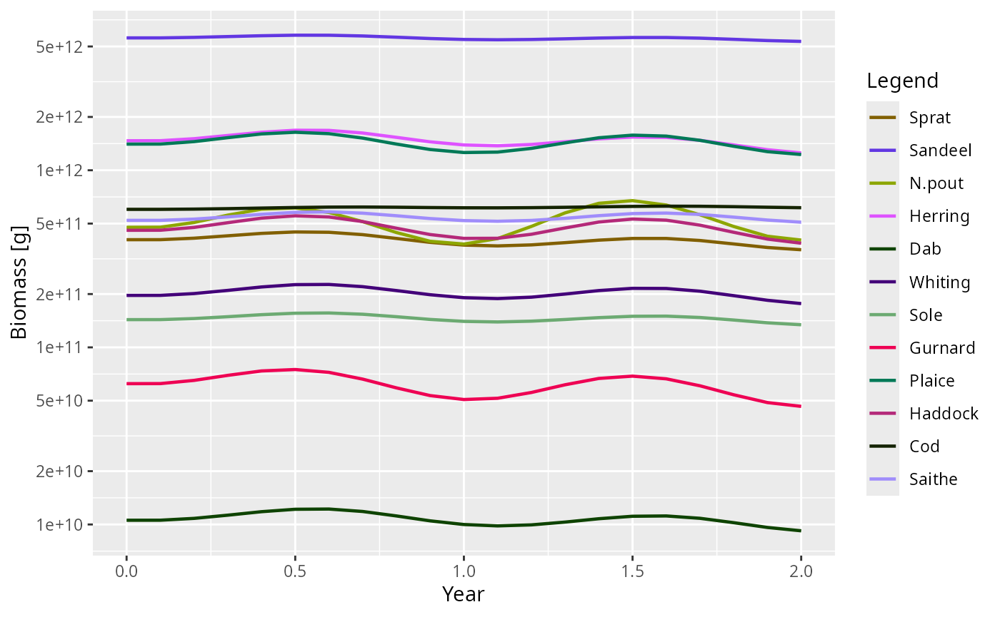
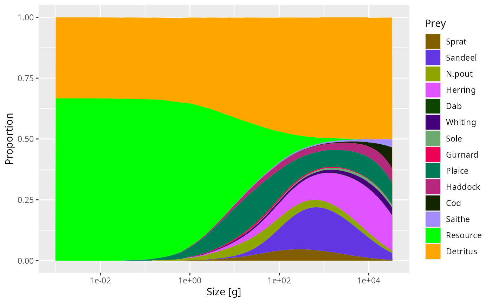

Overview
This vignette is for users who want to change how mizer works without editing the package source code. There are five main extension routes:
- Use
setExtEncounter()orsetExtMort()when you want to add simple external food or mortality sources that do not need their own dynamics. - Use
setRateFunction()when you want to replace one of the standard rate calculations such as encounter, growth, mortality, or recruitment. - Use
setComponent()when you want to add a new ecosystem component such as detritus, carrion, or an extra resource pool. - Use S3 subclassing of
MizerParamsandMizerSimwhen you want to extend generic mizer methods such as plotting or summaries for a custom model type. - Use
customFunction()only as a last resort when neither of the first four mechanisms is sufficient.
The safest workflow is to start with the smallest change that can
express your idea. In particular, if you only need to change one rate,
prefer setRateFunction() over replacing
mizerRates() or patching internal mizer functions.
Choosing an extension mechanism
The following table is a quick guide.
| Goal | Use | Notes |
|---|---|---|
| Add a non-dynamical external food or mortality source |
setExtEncounter() or
setExtMort()
|
Simplest route when the extra process does not need its own state variable. |
| Change one built-in rate calculation | setRateFunction() |
Best option for time-dependent or alternative rate formulations. |
| Add a new state variable or ecosystem pool | setComponent() |
Lets you add component dynamics and optional encounter or mortality contributions. |
| Extend plots or summaries for a custom model type | S3 subclass + new methods | Advanced route for custom behaviour layered on top of mizer generics. |
| Store parameters needed by your custom code |
other_params() or
component_params
|
Use other_params() for model-wide
parameters and component_params for one component. |
| Replace arbitrary internal mizer code | customFunction() |
Experimental and fragile. Use only if the standard mechanisms cannot express your change. |
setExtEncounter() and setExtMort()
These are the lightest-weight extension mechanisms. They are useful when you want to represent ecosystem processes that affect fish but do not need a separate state variable or their own dynamics.
Typical uses are:
- extra food sources that are not modelled explicitly, via
setExtEncounter(), - mortality from predators that are outside the model, via
setExtMort().
Both quantities are species x size arrays:
-
ext_encounterhas units of mass per year and is added directly togetEncounter(), -
ext_morthas units of1/yearand contributes directly to mortality.
If you only need a fixed background contribution, this is usually a
better choice than setComponent(). See Worked
example: non-dynamical external encounter and mortality.
setRateFunction()
Use setRateFunction() when your model still fits mizer’s
standard flow of rate calculations, but one step should be done
differently. Examples include:
- making encounter or mortality explicitly time-dependent,
- using an alternative growth or reproduction formulation,
- swapping in a different recruitment density-dependence,
- replacing the whole
mizerRates()pipeline with a custom version.
Your function is registered by name:
params <- setRateFunction(params, "Mort", "myMort")The function must be available by name in the global environment or in an installed package. mizer stores the function name, not the function object. See Worked example: a custom encounter function.
setComponent()
Use setComponent() when your model needs an additional
dynamical quantity that is not already represented in
MizerParams, for example detritus, carrion, an oxygen pool,
or a second resource spectrum.
A component can contribute to the model in up to three ways:
-
dynamics_funupdates the component itself during projection, -
encounter_funadds togetEncounter(), -
mort_funadds togetMort().
The component state can be any R object. For example it can be a scalar, a vector on the resource size grid, or a list with several fields. See Worked example: adding a detritus-like component.
S4 subclassing with S3 methods for MizerParams and
MizerSim
This is the most flexible extension route that still works with
mizer’s public generic functions. Although MizerParams and
MizerSim are S4 classes, mizer registers many user-facing
methods as S3 methods. That means extension package authors can define a
formal S4 subclass of these objects and then provide S3 methods for that
subclass such as:
-
plotBiomass.MyMizerSim(), -
summary.MyMizerParams(), -
getBiomass.MyMizerSim().
This is especially useful if you have added extra components or
metadata and want mizer’s summaries or plots to include them. Because
multiple extension packages may all want to modify the same function,
each method should call NextMethod() so that the
contributions compose correctly.
See
vignette("creating-extension-packages", package = "mizer")
for a step-by-step guide.
customFunction()
Use customFunction() only if you have confirmed that
your goal cannot be expressed with setRateFunction(),
setComponent(), resource_dynamics()<-, or
setReproduction(). It replaces an internal mizer function
in the package namespace and can easily break the package if your
replacement is not fully compatible.
Worked example: non-dynamical external encounter and mortality
If the extra ecological process does not need its own state variable, you can often model it with external encounter or external mortality.
For example, suppose each species has a fixed extra food source that scales allometrically with body size:
params_ext <- NS_params
extra_food <- outer(rep(0.1, nrow(species_params(params_ext))),
w(params_ext)^(3/4))
ext_encounter(params_ext) <- ext_encounter(params_ext) + extra_foodThis adds extra_food directly to the total encounter
rate:
enc_base <- getEncounter(NS_params)
enc_ext <- getEncounter(params_ext)
range(enc_ext - enc_base, na.rm = TRUE)
#> [1] 5.623413e-04 2.820537e+02Similarly, you can add a fixed external mortality term:
params_mort <- NS_params
extra_mort <- outer(rep(0.05, nrow(species_params(params_mort))),
w(params_mort)^(-1/4))
ext_mort(params_mort) <- ext_mort(params_mort) + extra_mortThis route is appropriate when:
- the extra process is not depleted or replenished dynamically,
- fish are affected by it but do not feed back on it,
- you want a transparent species x size term rather than a new component.
Worked example: a custom encounter function
The next step up in complexity is to modify one rate while delegating most of the work back to the built-in mizer function. The example below adds a sinusoidal seasonal multiplier to the standard encounter rate.
params <- NS_params
other_params(params) <- list(
season_amplitude = 0.2,
season_period = 1
)
seasonalEncounter <- function(params, n, n_pp, n_other, t, ...) {
p <- other_params(params)
multiplier <- 1 + p$season_amplitude * sin(2 * pi * t / p$season_period)
multiplier * mizerEncounter(params, n = n, n_pp = n_pp, n_other = n_other,
t = t, ...)
}Register the function and inspect the result:
params2 <- setRateFunction(params, "Encounter", "seasonalEncounter")
enc0 <- getEncounter(params2, t = 0)
enc_quarter <- getEncounter(params2, t = 0.25)
range(enc_quarter / enc0, na.rm = TRUE)
#> [1] 1.2 1.2
sim <- project(params2, t_max = 2, t_save = 0.1)
plotBiomass(sim)
This pattern is often the easiest way to extend mizer safely:
- fetch custom parameters from
other_params(params), - compute a modifier,
- call the standard mizer rate function,
- return a plain numeric matrix of the same shape.
See How custom rate functions are called for more info.
Testing a custom rate function
When you develop an extension package, add tests that compare your custom rate function to the built-in behaviour in a simple case. For the seasonal example a good first test would check:
- at
t = 0, the result equalsmizerEncounter(), - at
t = 0.25, the result is scaled by1 + season_amplitude, - the returned object has the same dimensions and dimnames as
initialN(params).
Worked example: adding a detritus-like component
Now suppose you want to add a component that is consumed by fish and slowly relaxes back to a carrying capacity. We will store the component on the full resource size grid so that it can be used like an extra prey spectrum.
detritusEncounter <- function(params, n, n_pp, n_other, component, ...) {
params2 <- params
params2@other_encounter[[component]] <- NULL
mizerEncounter(params2, n = n, n_pp = n_other[[component]],
n_other = n_other, ...)
}
detritusDynamics <- function(params, n_other, rates, dt, component, ...) {
detritus <- n_other[[component]]
p <- params@other_params[[component]]
interaction <- params@species_params$interaction_resource
mort <- as.vector(interaction %*% rates$pred_rate)
target <- p$rate * p$capacity / (p$rate + mort)
target - (target - detritus) * exp(-(p$rate + mort) * dt)
}
detritus_params <- list(
capacity = initialNResource(params),
rate = params@rr_pp
)
params3 <- setComponent(
params,
component = "Detritus",
initial_value = initialNResource(params) / 2,
dynamics_fun = "detritusDynamics",
encounter_fun = "detritusEncounter",
component_params = detritus_params,
colour = "orange"
)Once the component has been added:
- its initial state is available via
initialNOther(params3)$detritus, - its settings can be inspected with
getComponent(params3, "detritus"), - its contribution is included automatically in
getEncounter()andgetDiet().
For example:
plotDiet(params3, species = "Cod")
If you also want the component to contribute to mortality, add a
mort_fun when calling setComponent().
S4 subclassing with S3 method dispatch
When an extension needs to change how generic mizer functions behave
— for example making getBiomass() include extra components,
or making plotBiomass() show additional panels — the right
approach is to define a marker S4 subclass and register S3 methods for
that class. This makes multiple extension packages composable: each
package adds its own step and passes control to the next via
NextMethod().
For a step-by-step guide to writing this kind of extension package,
including worked examples from mizerStarvation
and mizerShelf,
see
vignette("creating-extension-packages", package = "mizer").
How custom rate functions are called
Each overridable rate has its own expected function signature and
return shape. The most important point is that custom rate functions
should return plain numeric objects, not ArraySpeciesBySize
or ArrayTimeBySpecies objects. The get*()
wrappers add those classes afterwards where appropriate.
The table below summarises the required inputs and outputs.
| Rate | Signature | Return value |
|---|---|---|
| Encounter | function(params, n, n_pp, n_other, t, …) | numeric matrix, species x size |
| FeedingLevel | function(params, n, n_pp, n_other, t, encounter, …) | numeric matrix, species x size |
| EReproAndGrowth | function(params, n, n_pp, n_other, t, encounter, feeding_level, …) | numeric matrix, species x size |
| ERepro | function(params, n, n_pp, n_other, t, e, …) | numeric matrix, species x size |
| EGrowth | function(params, n, n_pp, n_other, t, e, e_repro, …) | numeric matrix, species x size |
| PredRate | function(params, n, n_pp, n_other, t, feeding_level, …) | numeric matrix, species x full size grid |
| PredMort | function(params, n, n_pp, n_other, t, pred_rate, …) | numeric matrix, species x size |
| FMort | function(params, n, n_pp, n_other, t, effort, e_growth, pred_mort, …) | numeric matrix, species x size |
| Mort | function(params, n, n_pp, n_other, t, f_mort, pred_mort, …) | numeric matrix, species x size |
| RDI | function(params, n, n_pp, n_other, t, e_growth, mort, e_repro, …) | numeric vector, one value per species |
| RDD | function(rdi, species_params, params, t, …) | numeric vector, one value per species |
| ResourceMort | function(params, n, n_pp, n_other, t, pred_rate, …) | numeric vector, one value per full size bin |
| Rates | function(params, n, n_pp, n_other, t, effort, rates_fns, …) | named list with all standard rate components |
Common arguments
Most custom rate functions use the same core arguments:
-
params: theMizerParamsobject, -
n: species abundance by species and size, -
n_pp: the resource abundance on the full size grid, -
n_other: a named list of additional component states, -
t: the current simulation time.
Some rates also receive prerequisite rates that were already
calculated earlier in the pipeline, for example encounter,
feeding_level, or pred_mort.
Dimensions and dimnames
Most size-resolved rates should return a matrix with the same
dimensions as initialN(params), so a species x size matrix
with the same dimnames. The two important exceptions are:
-
PredRate, which uses the full prey size grid and therefore returns species xw_full, -
ResourceMort, which returns one value perw_fullbin rather than one value per species.
At registration time setRateFunction() calls your
function with test inputs and checks that the returned object has the
expected dimensions. This catches many mistakes immediately.
Before moving to dynamical components, it is worth seeing the even simpler case of a non-dynamical extension.
Practical advice for extension authors
Start from a built-in function
If possible, copy the relevant built-in mizer function, make one change, and register the modified version. This makes it much easier to stay compatible with the rest of the rate pipeline.
Keep model-wide and component-specific parameters separate
Use:
-
other_params(params)for parameters used by custom rate functions across the whole model, -
component_paramsinsetComponent()for parameters belonging to one component only.
This keeps the structure of params@other_params readable
and makes debugging much easier.
Return plain numeric objects
If you replace a built-in rate function, return a plain matrix,
vector, or list with the expected dimensions. Do not return
ArraySpeciesBySize objects from custom rate functions that
are called through setRateFunction().
Preserve dimnames where possible
Many bugs in extension code come from returning the right numeric values with the wrong shape. A good habit is to build outputs from existing mizer arrays so that dimensions and dimnames are inherited automatically.
Test registration and use
Test both of these:
- that
setRateFunction()orsetComponent()succeeds, - that the downstream function you care about, such as
getEncounter(),getDiet(), orproject(), uses your extension as intended.
When to move beyond a local script
If your extension becomes useful across several projects, consider turning it into a small package. That gives you:
- a stable namespace so mizer can find your functions by name,
- a natural place for unit tests and documentation,
- versioning that can be recorded in
params@extensions.
For larger changes you may also want to discuss your design on the mizer issue tracker before committing to an interface.